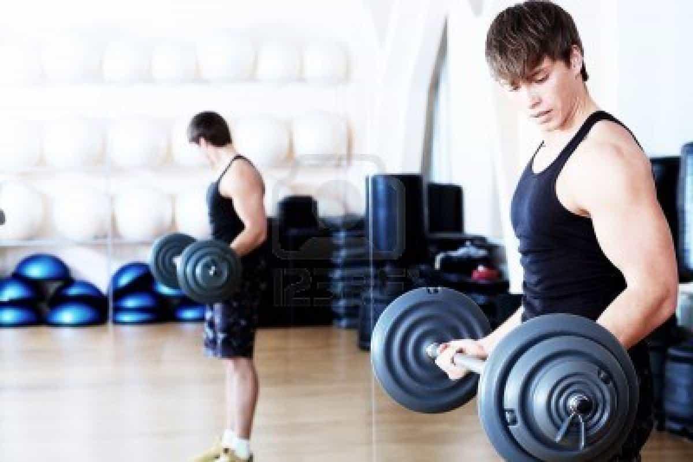

Sponsored Article is ROK's official account that publishes sponsored articles from advertisers. If you are interested hiring a sponsored article for your site, product, or service, visit our advertising page.


The following article was sponsored by Limitless Brain
Life comes at you fast, and if you’re not prepared for it, so many opportunities can pass you by. Given how hyper-competitive modern life is—in business, in sports, in dating—it’s very easy for you to miss out if you’re not performing at your best. While exercising and eating right will put you on the right track to peak performance, there are many other ways you can speed past the competition and achieve your goals. Here’s why you need to max out your performance physically, mentally and socially…
Business is a high-pressure, high-risk, high-reward environment that rewards quick thinking, smart planning and courage. If your brain is not working at one hundred percent, you run the risk of missing opportunities to advance in your career. Fortune favors those who spot opportunity and seize it, so you need to be at peak performance on the job in order to succeed in your chosen career field.
For example, nootropics such as those found in Limitless Brain can enhance your mental performance on the job. Limitless Brain includes nootropics and stimulants such as huperzine, which enhances neuroplasticity and memory, enabling you to absorb information more quickly and efficiently. L-tyrosine can reduce your stress levels as well as make you more verbally adept by targeting the portion of your brain responsible for language.
Given how competitive the business world is, you can’t afford not to use every advantage available to you. Nootropics and other supplements can give you the edge necessary to succeed and achieve your dreams.

Working out and eating right is a necessary part of maintaining a healthy lifestyle, but if you’re not taking care of your body properly, you might be wasting your time in the gym. Peak performance is a necessity when lifting in order to avoid injuries and make the most of your workouts, so you need to keep your energy levels and physical strength as high as possible without resorting to excessive amounts of caffeine and other potentially harmful stimulants.
For example, supplements such as sulbutiamine can reduce your overall stress levels and lower your fatigue, allowing you to stay alert for longer and lift harder in the gym. Adrafinil can also be used to enhance your energy levels without giving you the jitters and nervousness that come from consuming too much caffeine. The negative effects of caffeine can be mitigated with l-theanine, a nootropic that naturally calms you down and reduces social anxiety. Additionally, l-theanine has been proven to lower both blood pressure and heart rate, enhancing the health of your circulatory system.
Considering that modern life is geared towards making people as fat and unhealthy as possible, you’re already facing an uphill battle in maintaining your health and body. You need every advantage that you can get in order to maintain your physical fitness and accomplish your workout goals. Maintaining peak performance in the gym is a necessity for maximizing your lifts.
Return Of Kings readers don’t need to be reminded that we live in a hypercompetitive sexual market, where bad female attitudes and obesity have driven the egos of attractive women into the stratosphere. We live in an environment where plain Janes get treated like perfect tens and there’s always an army of beta orbiters ready to slaver over a girl’s MySpace angle selfies on Facebook, Instagram, or wherever.
In this kind of an environment, you can’t simply be a good man, you need to be the best man. The only way you can do this is by staying at peak performance. In a world where male thirst has reached epidemic levels, you need to stand out from the pack in every way when it comes to your game, your accomplishments and your looks. By remaining in top physical and mental shape, you can make yourself more socially adept and have an easier time getting girls.

Many of the supplements mentioned above (found in Limitless Brain) reduce your social anxiety, making getting girls easier. For example, l-tyrosine’s ability to increase your verbal acuity makes it easier to charm a girl with your wit and wisdom, while l-theanine will lower your stress levels and make you calmer. Huperzine’s ability to enhance your memory and senses also makes it easier to deal with girls.
In a world where everything you have has to be earned, there’s no excuse for lagging behind when it comes to performance. Using the tricks in this article, you can boost your physical and mental state past the average man, allowing you to dominate in the boardroom, bedroom and the gym. Peak male performance can be yours: you just need to reach out and take it.
Click Here to Learn More about LIMITLESS BRAIN and Shop Now!